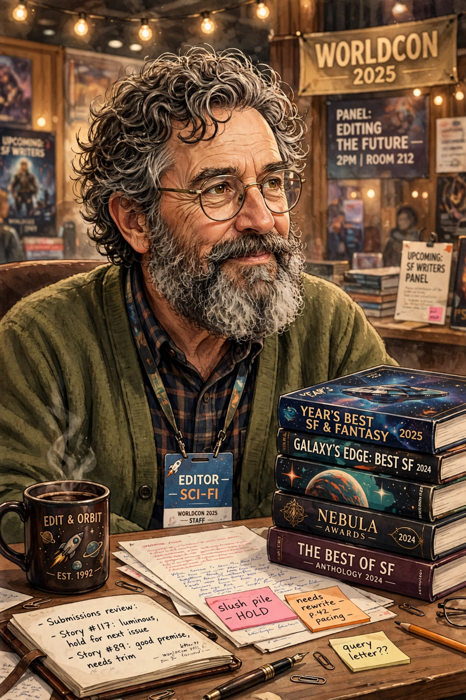

Gardner Raymond Dozois (July 23, 1947 – May 27, 2018) was an American science fiction author and editor. He was the founding editor of The Year's Best Science Fiction anthologies (1984–2018) and was editor of Asimov's Science Fiction magazine from 1984 to 2004, garnering multiple Hugo and Locus Awards for those works, almost every year. He also won the Nebula Award for Best Short Story twice, for "The Peacemaker" (1983) and "Morning Child" (1984).

| Born | July 23, 1947, Salem, Massachusetts, U.S. |
|---|---|
| Died | May 27, 2018 (aged 70), Philadelphia, Pennsylvania, U.S. |
| Occupation | Editor, writer |
| Genre | Science fiction |
| Notable works | The Year's Best Science Fiction; Hunter's Run (with George R. R. Martin and Daniel Abraham) |
Dozois was born in Salem, Massachusetts. He served in the U.S. Army as a military journalist from 1966 to 1969 and afterwards moved to New York to work as an assistant editor in science fiction publishing. His first published story appeared in 1966. During the 1970s he published several novels, including Strangers (1978), and a body of short fiction noted for its literary quality.
Dozois became editor of Asimov's Science Fiction in 1984 (formally from the January 1986 issue) and shaped it into the leading magazine in the field, winning the Hugo Award for Best Professional Editor fifteen times. In 1984 he launched The Year's Best Science Fiction, an annual anthology that ran to 35 volumes and became a benchmark of the field. He was an early champion of the term "science fiction" over "sci-fi" and, with others, helped define the cyberpunk moment of the 1980s through the magazine's pages. Later anthologies, many co-edited with George R. R. Martin, included Old Mars, Old Venus, Dangerous Women and Warriors, which included Martin's Hugo-winning novella work.
Dozois was inducted into the Science Fiction Hall of Fame in 2011. He died in Philadelphia on May 27, 2018, of complications from an infection following hospitalisation for a fall. The 36th volume of The Year's Best Science Fiction, completed shortly before his death, appeared posthumously in 2019.